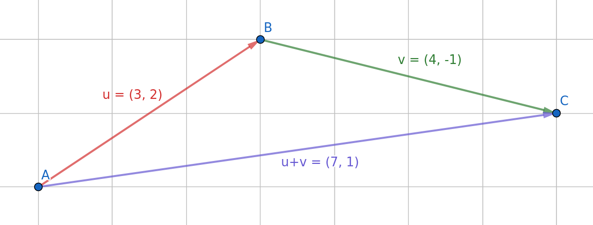

Tema 8
Vectores y rectas en el plano
Magnitudes escalares y vectoriales
Mientras que las magnitudes escalares solo indican una cantidad, las escalares tambíen indican una dirección y sentido.
Vector
Segmento orientado (es decir, una "flecha") definidos por dos puntos, su origen y su extremo.
Si esos dos puntos son A y B el vector se denota por \[\overrightarrow{AB}\]
Coordenadas de un vector
1Dado los puntos del plano A(3,5); B(3,9) y C(2,5) representa y calcula las coordenadas de los siguientes vectores:
- a \[\overrightarrow{AB}\]
- b \[\overrightarrow{BA}\]
- c \[\overrightarrow{BC}\]
- d \[\overrightarrow{AC}\]
Vector de posición
Dado un punto A su vector de posición es el vector que une el origen de coordenadas O(0,0) y dicho punto.
Elementos de un vector
- Módulo: su tamaño
- Sentido
- Dirección: donde está su origen y su fin
Módulo de un vector

Módulo vector
Sea \[\overrightarrow{v}(v_1,v_2)\] un vector su módulo es:
\[|v| = \sqrt{x^2 + y^2}\]
2Calcula el módulo de los vectores con las siguientes coordenadas:
- a \[\overrightarrow{v}(2,3)\]
- b \[\overrightarrow{u}(-2,4)\]
- c \[\overrightarrow{w}(-3,6)\]
- d \[\overrightarrow{t}(1,1)\]
Vectores equipolentes y vector libre
3Dados los puntos del plano A(1,1), B(3,3); C(5,5); D(4,4) y E(6,4), calcula las coordenadas del vector \[\overrightarrow{AB}\] y señala otros vectores equipolentes a el usando los puntos indicados:
Operaciones con vectores: suma
De forma gráfica
Operaciones con vectores: suma
De forma analítica...
\[(x_1, y_1) \pm (x_2, y_2) = (x_1 \pm x_2, y_1 \pm y_2)\]
4Representa y calcula de forma analítica la suma de los siguientes vectores:
- a
- b
- c
- d
Operaciones con vectores: producto por escalar (un número)
De forma gráfica

Operaciones con vectores: producto por escalar (un número)
De forma analítica...
\[\lambda (x_1, y_1) = (\lambda \cdot x_1, \lambda \cdot y_1)\]
5Representa y calcula de forma analítica los siguientes productos escalares de vectores:
Ecuaciones de la recta
Ecuación vectorial
Ver en GeogebraEcuación vectorial
\[ \overrightarrow{X} = \overrightarrow{O} + \lambda \cdot \overrightarrow{V} \]
\[(x,y) = (o_1, o_2) + \lambda \cdot (v_1, v_2)\]Ecuación paramétrica
Separamos las componentes x e y del vector.\[\begin{cases} x = o_1 + \lambda \cdot v_1\\ y = o_2 + \lambda \cdot v_2 \end{cases} \]
Ecuación continua
Despejamos \[\lambda\] en cada ecuación e igualamos\[ \frac{x - o_1}{v_1} = \frac{y - o_2}{v_2} \]
Ecuación general o implícita
Pasamos todos los términos a un miembro de la ecuación.
\[ Ax + By + C = 0 \]
Ecuación explícita
Despejamos y\[y = m \cdot x + n \]
Expresa la ecuación de la recta que pasa por el punto A(2,3) y tiene por vector director V(1,4) empleando el razonamiento anterior.
Halla la ecuación explícita de la recta que pasa por A(0,2) y B(3,7)
Pendiente de una recta
\[m = \frac{x_2 - x_1}{y_2 - y_1} = \frac{v_2}{v_1}\]
Ecuación punto-pendiente
Recta que pasa por O(x_0, y_0)
\[y - y_0 = m \cdot (x-x_0)\]